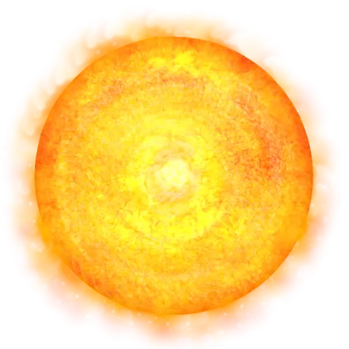

UY Scuti（たて座UY星） かつて「宇宙最大」と呼ばれた、かわいい星
UY Scuti（たて座UY星）は、地球から約6,000光年はなれた、たて座の方向にある赤色超巨星です。
かつて「既知の恒星で最大級」として世界的に知られるようになりましたが、いまは見積もりが大きく見直されています。星そのものではなく、「測り方」が変わった事でサイズが変わったという身の上が、なんか哀れでで好きです。
かわいいですよね（ ´ᯅ` ）

1基本プロフィール
| 項目 | 情報 |
|---|---|
| 正式名称 | UY Scuti（UY Sct） |
| 日本語名 | たて座UY星 |
| 所属星座 | たて座 |
| 地球からの距離 | 約5,900〜6,300光年 |
| 天体分類 | 赤色超巨星（赤色極超巨星の候補） |
| スペクトル型 | M2〜M4 Ia-Iab |
| 半径 | 太陽の約909倍（2023年の推定） |
| 質量 | 太陽の約7〜10倍（推定） |
| 光度 | 太陽の約12万4,000倍 |
| 表面温度 | 約3,550 K |
| 変光のタイプ | 半規則型変光星 |
| 見かけの等級 | 約8.29〜10.56等 |
恒星の大きさや距離には、測定方法による不確実性があります。
2太陽系に置いたらどうなる？
約909倍
UY Scutiの半径（太陽を1としたときの、2023年の推定値）。
もし、UY Scutiを太陽の位置に置いたら……。
星の表面は、太陽から約4.2 AUのところまで広がります。火星の軌道よりずっと外側で、小惑星帯も飲み込んで、木星の手前まで届く大きさです。
| 天体 | 太陽からの距離 |
|---|---|
| 地球 | 約1 AU |
| 火星 | 約1.5 AU |
| 小惑星帯 | 約2.2〜3.2 AU |
| UY Scutiの半径 | 約4.2 AU |
| 木星 | 約5.2 AU |
- 太陽の半径：約69万6,000 km
- UY Scutiの半径：約6億3,300万 km
- UY Scutiの直径：約12億6,600万 km（太陽の約1,818倍）
- 体積は、単純計算で太陽の約7億5,000万倍
光が星の表面をぐるっと1周するのにかかる時間は、太陽だと約15秒。UY Scutiでは、単純計算でおよそ3.7時間もかかります。
ちなみに、かつて使われていた「約1,708倍」という値なら、半径は約7.94 AU。木星の軌道を大きくこえてしまいます。
3なぜ「宇宙最大」と呼ばれ、なぜ小さくなったの？
UY Scutiが有名になったきっかけは、2012年の観測です。
- ヨーロッパ南天天文台（ESO）の超大型望遠鏡VLTで、星の見かけの大きさ（角直径）が測定された
- 当時使われていた距離は、約9,500光年
- その組み合わせで、半径は約1,708倍という推定値になった
この数字が非常に大きかったため、「既知で最大の恒星」として世界中で紹介されるようになりました。
ところが、その後にESAのガイア衛星などで距離の測定が進みます。2023年には、ガイアのデータにもとづく距離と赤外線観測などを使って、半径約909倍という推定が発表されました。
UY Scutiが急に縮んだわけではありません。地球からの距離の見積もりが変わったことで、計算される大きさが変わったのです。
4大きさを正確に測るのは、なぜ難しい？
赤色超巨星は、そもそも大きさを測ること自体がとても難しい天体です。理由は主に3つあります。
- 表面の境界があいまい：外側の層がとても薄く、星本体と周りのガスの境目がはっきりしません。どこまでを「半径」とするかで、値が変わります。
- 星自身が脈動している：ふくらんだり縮んだりを繰り返すので、観測する時期によって、見かけの大きさが変わる可能性があります。
- 地球からの距離が不確か：半径を求めるには、見かけの大きさに加えて距離も必要です。距離の推定が変われば、半径も変わります。
この3つの問題があるため、UY Scutiの大きさには、いまも不確実性が残っています。
5赤くて低温なのに、すごく明るい
UY Scutiは、進化がかなり進んだ段階の星です。
- 中心部の水素が減って、星の内部構造が変化する
- 外層が大きくふくらむ
- 表面温度が下がって、全体が赤く見えるようになる
- 外層から、大量のガスを放出するようになる
これほど巨大なのに、表面温度は約3,550 K。太陽の約5,800 Kと比べると、かなり低温です。星は、表面温度が低いほど赤っぽく光ります。
でも、暗い星というわけではありません。巨大な表面積のおかげで、光度は太陽の約12万4,000倍もあります。
さらに、強力な恒星風でガスを宇宙空間へ放出しています。推定される質量放出率は、年間で太陽質量の約5.8×10⁻⁵倍（約0.0058％）。地球の質量に直すと、毎年、地球約19個分のガスを手放している計算です。
放出されたガスは、星の周りに広がって、ガスや塵が集まった複雑な星周環境をつくります。進化した大質量星に見られる、大切な現象です。
6脈動する変光星
UY Scutiは、半規則型変光星に分類されています。星自身の明るさが、時間とともに変わる星です。
- 星の外層がふくらむ
- そのあと、縮む
- この変化がくり返される
- 表面温度や光度が変わり、地球から見た明るさも変わる
脈動の周期は、約740日という値が紹介されることがあります。一方、天文データベースのSIMBADには、約814日の周期も記録されています。
脈動は、単純な一定の周期とはかぎらないので、数値には幅があります。
7最後はどうなるの？
UY Scutiは、進化の進んだ大質量星です。いずれは、恒星としての寿命を迎えます。
このような大質量星は、中心部で核融合を進めて、最終的に鉄を含む重い元素がたまる段階へ進みます。そのあと中心核が重力崩壊を起こして、超新星爆発に至る可能性があります。爆発のあとには、中性子星やブラックホールが残ることもあります。
ただし、UY Scutiが具体的にどんな最期を迎えるのかは、いまの観測だけでは確定できません。
8UY Scutiの面白いところ
「宇宙最大の星」という肩書きだけでは、もったいない星です。
- かつて約1,708倍と見積もられ、2023年には約909倍に見直された
- 小惑星帯を飲み込むほどの巨大さ
- 低温なのに、太陽の約12万4,000倍という光度
- 恒星風で、大量のガスを放出している
- 脈動によって明るさが変わる、半規則型変光星
- 距離や表面の境界が不確かで、大きさの決定が難しい
- 将来は、超新星爆発を起こす可能性がある
UY Scutiは、「大きさをどう測るか」まで含めて面白い星です。
巨大さの記録だけではなく、恒星の進化、質量放出、距離測定の精度といった、いくつもの研究テーマがぎゅっと詰まっています。
VYかにまよ、UY Scutiときたら次はあいつかな…ということで、某クソデカ恒星に話を進めた方が良さそうな雰囲気も出てきてますが…次の解説文はどの天体にしようかな( ´〜` )💫
ちなみに、このサイトのVYかにまよの半径は、約1,420倍。いまの推定値では、UY Scutiより大きい星です。「どちらが最大か」は、観測が進むたびに入れ替わるのかもしれません。
AstroArtsさんでは「黄色超巨星（Yellow Supergiant / YSG）」として紹介されてますが、赤色超巨星でも間違いではないみたいです。
解説ページも置いておきます。
🔭 この記事に出てくる言葉
- 赤色超巨星（せきしょくちょうきょせい）
- 進化の終わりに近い、質量の大きな星です。外側が大きくふくらんで表面温度が低くなり、赤っぽく見えます。オリオン座のベテルギウスも、この仲間です。
- 赤色極超巨星（せきしょくきょくちょうきょせい）
- 赤色超巨星の中でも、特に大きくて明るく、物質を激しく放出している星のグループです。UY Scutiは、その候補とされています。
- 光年（こうねん）
- 光が1年かけて進む距離のことで、時間ではなく距離の単位です。1光年は約9兆5000億km。「約6,000光年」は、光でも約6,000年かかる距離という意味です。
- 光度（こうど）
- 天体が、1秒間に出している光のエネルギーの量です。天体の「本当の明るさ」にあたり、地球からの距離は関係しません。UY Scutiの光度は、太陽の約12万4,000倍です。
- ケルビン（K）
- 温度の単位です。0 K ＝ −273.15°Cで、1 K の幅は1°Cの幅と同じです。UY Scutiの表面温度「約3,550 K」は、約3,300°C。太陽の表面（約5,800 K）より、ずっと低温です。
- スペクトル型
- 星の光を虹のように分けて、そのようすから星を分類したものです。「M」は、低温で赤い星のグループです。
- 変光星（へんこうせい）
- 明るさが、時間とともに変わる星のことです。そのうち「半規則型」は、変光に、ある程度の周期はあるものの、きっちりとは決まっていないタイプです。
- 見かけの等級（みかけのとうきゅう）
- 地球から見たときの、天体の明るさを表す数字です。数字が小さいほど明るく見えます。肉眼で見える限界は、およそ6等です。
- AU（天文単位）
- 太陽系の天体までの距離を表すための単位です。1 AU ＝ 地球と太陽の平均距離（約1億5000万km）。たとえば海王星は、太陽から約30 AUのところを回っています。
- 質量放出（しつりょうほうしゅつ）
- 星が、外側のガスなどを宇宙空間に放出していくことです。太陽も「太陽風」としてガスを出していますが、UY Scutiのような巨大な星は、それとは比べものにならないほど大量のガスを放出します。
- 恒星風（こうせいふう）
- 星の表面から、宇宙空間へ吹き出していく、ガスの流れです。太陽の「太陽風」も、その一つです。
- 太陽質量（たいようしつりょう）
- 天体の重さを表すための単位です。太陽1個分の重さを「1」とします。
- 角直径（かくちょっけい）
- 天体が、空でどれくらいの大きさに見えるかを、角度で表したものです。距離がわかると、そこから本当の大きさ（半径）が計算できます。
- ガイア衛星
- ヨーロッパ宇宙機関（ESA）の宇宙望遠鏡です。天の川銀河にある、とてもたくさんの星の位置や距離を、高い精度で測っています。
- 恒星の進化（こうせいのしんか）
- 星が、生まれてから一生を終えるまでに、大きさや明るさ、中身が変わっていく過程のことです。質量の大きな星ほど速く進化して、短い一生を終えます。
- 核融合（かくゆうごう）
- 軽い原子核どうしがくっついて、重い原子核になる反応です。星は、中心部での核融合で、エネルギーを生み出しています。
- 重力崩壊（じゅうりょくほうかい）
- 星の中心部が、自分の重力に耐えきれずに、つぶれていく現象です。超新星爆発や、ブラックホールができるきっかけになります。
- 超新星爆発（ちょうしんせいばくはつ）
- 質量の大きな星が、一生の最後に起こす大爆発です。爆発した星は、ごく短い間、とても明るく輝きます。